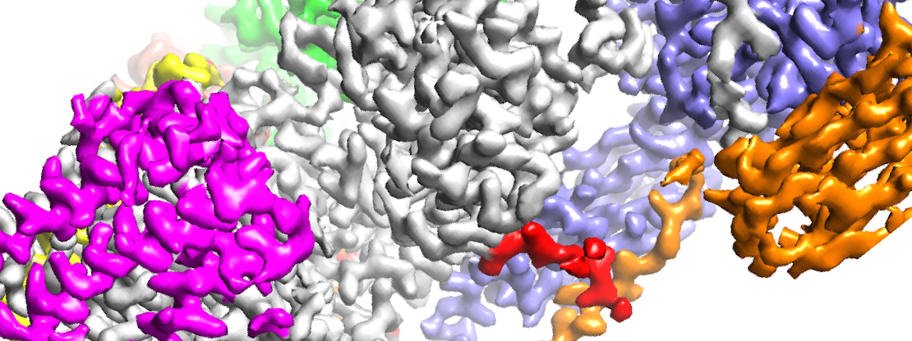

About me!
My primary academic interests are in software development, especially in relation to the medical field. During high school, I was a summer intern at Brookhaven National
Laboratory where I researched proteins involved in DNA replication and used 3D modelling software to aggregate large image datasets. This is where I was introduced to computational biology,
and when I started to realize the direction I wanted my future career to go.

Last summer, I was an intern at Van Andel Research Institute where I worked in High Performance Computing, managing storage systems for the head research teams and facilitating
communication so their computational needs could be met with time and cost efficiency. I hope to continue down this field and contribute to scientific research through computing.